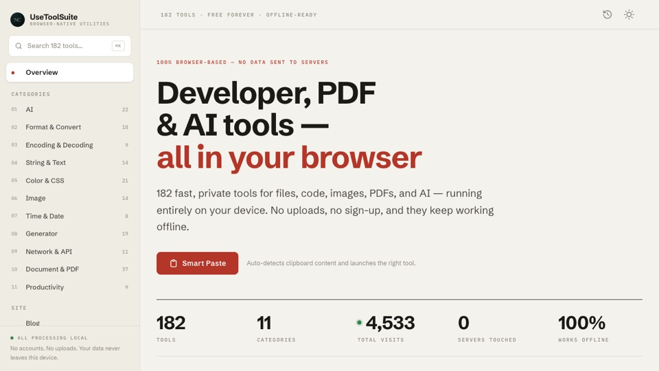

Proje Özeti
Tüm işlemler %100 client-side olarak gerçekleştirilir; hiçbir veri sunucuya gönderilmez. Bu yaklaşım hem maksimum performans hem de yüksek gizlilik sağlar.
Problem & Çözüm
Modern geliştirme süreçlerinde küçük ama sık yapılan işlemler (formatlama, dönüştürme, encoding vb.) ciddi zaman kaybına yol açar.
- Tek noktadan erişilebilir araçlar
- Anlık işlem (zero-latency hissi)
- Veri gizliliği garantisi
Temel Özellikler
- 180'den fazla geliştirici aracı (format, encode, generate, convert, AI, PDF, görüntü)
- %100 tarayıcı tabanlı çalışma (server bağımsız)
- Gerçek zamanlı işlem (client-side execution)
- Modüler ve genişletilebilir tool mimarisi
- SEO optimize edilmiş sayfa yapısı
- Klavye kısayolları ile hızlı kullanım (Ctrl+Enter, Ctrl+L)
- Responsive ve erişilebilir arayüz
Teknik Mimari
- Astro (Static-first architecture): Minimum JavaScript, maksimum hız
- Client-side processing: Canvas API, FileReader, Blob gibi native Web API’ler kullanıldı
- Zero dependency tool logic: Tüm araç algoritmaları harici kütüphane olmadan geliştirildi
- Component-based yapı: Yeniden kullanılabilir UI bileşenleri
- Type-safe geliştirme: TypeScript ile güçlü tip kontrolü
Kullanılan Teknolojiler
Astro v5
TypeScript
Tailwind CSS v4
Lucide Icons
Cloudflare Pages
Araç Kategorileri
- Format & Convert
- Generators
- Encoding
- Color & CSS
- String & Text
- Time & Date
Sistem Tasarımı
- Tool logic katmanı (pure TypeScript)
- UI bileşen katmanı (reusable components)
- İçerik ve SEO katmanı (dynamic pages + metadata)
- Kategori bazlı sayfa üretimi (dynamic routing)
Öne Çıkan Mühendislik Kararları
- Server bağımlılığı tamamen kaldırıldı
- Performans için gereksiz JS minimize edildi
- Tüm araçlar bağımsız modüller olarak tasarlandı
- ZIP/ICO gibi işlemler sıfırdan implement edildi
Gelecek Geliştirmeler
- Yeni tool modülleri (özellikle AI destekli araçlar)
- Kullanıcı tercihleri ve kişiselleştirme
- Progressive Web App (PWA) desteği
- Gelişmiş arama ve filtreleme sistemi
Canlı Proje
UseToolSuite

usetoolsuite.com — tamamen tarayıcıda çalışan 180+ üretkenlik aracı